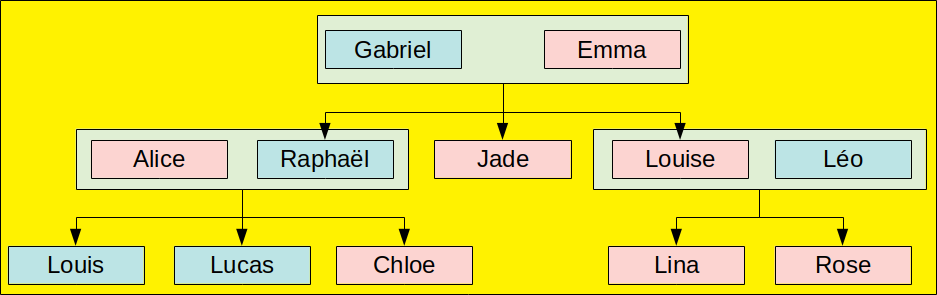
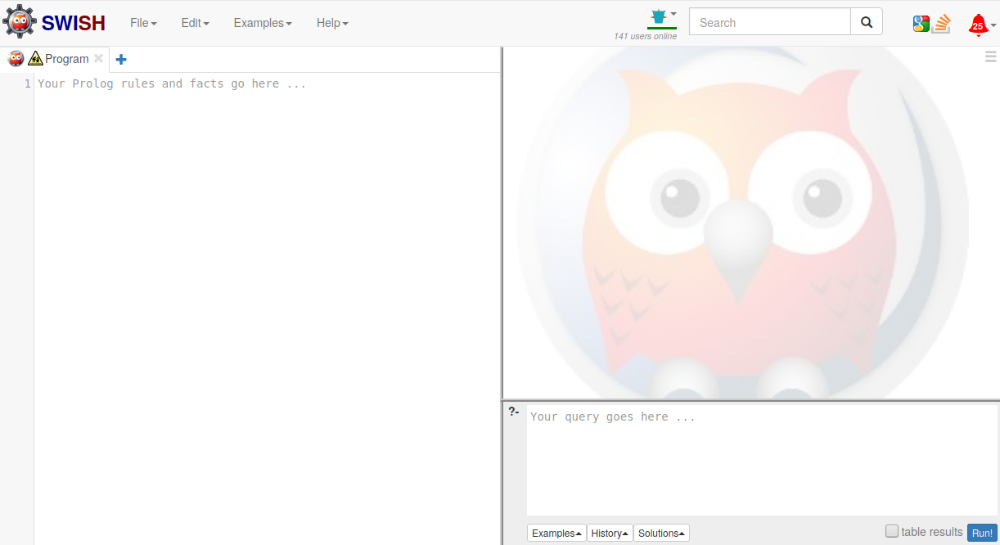
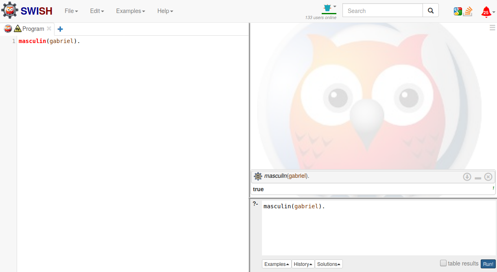
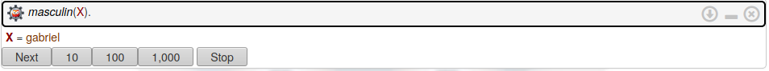

Programmation logique
I. Présentation
La programmation logique est un paradigme de programmation déclaratif très différent de tout ce que vous avez pu voir jusqu'à présent. Il repose essentiellement sur la logique des prédicats (ou logique du premier ordre). Il y a peu de langages mettant en oeuvre la programmation logique. On pourra toutefois en citer 2 : Prolog et mercury. Prolog restant malgré tout la référence, c'est avec ce langage que ce cours va être illustré.
Prolog est un langage créé en 1972 par un français (Cocorico !) : Alain Colmerauer. C'est un langage principalement utilisé dans le domaine de l'intelligence artificielle, mais aussi dans le traitement du langage.
Pour utiliser Prolog, vous pouvez bien sûr installer swi-prolog sur votre marchine, mais le plus simple pour tester les exemples de ce cours est de vous rendre sur l'interpréteur en ligne swish.
II. Principe général de fonctionnement avec un premier exemple
Dans Prolog, un programme est une base de faits et règles, et le programme est en quelque sorte exécuté en posant une question appelée but dans l'interpréteur.
Pour illustrer le fonctionnement de Prolog, nous allons partir sur la manipulation de l'arbre généralogique suivant, très conventionnel il est vrai (couples hétérosexuels, pas de remariages, etc.), mais c'est pour la bonne cause : vous simplifier la vie !) :

Dans notre base de faits, nous allons décrire différents types d'information pour représenter cet arbre :
- Le sexe (masculin ou féminin) de chacun ;
- Les couples (qui est marié avec qui) ;
- Les liens de filiation (qui est enfant de qui.
Par exemple, pour représenter le fait que Gabriel est de sexe masculin, on va tout simplement écrire :
masculin(gabriel).
En Prolog, cela s'appelle un fait. Un fait est toujours vrai.
Vous pourrez noter que :
- On n'a jamais déclaré ce qu'était "masculin" ou "gabriel" ;
- On n'a surtout pas mis de majuscule à "gabriel" (ni à "masculin" d'ailleurs");
- La ligne se termine par un point (".").
En prolog, les mots qui ne sont pas des mots du langage (comme "gabriel" ou "masculin" ici) sont appelés des atomes. Attention : ce ne sont pas des données de type "chaîne de caractères" ! (les chaînes de caractères existent en Prolog, mais n'ont pas d'intérêt si elles ne doivent pas être manipulées et si on n'est pas dans un contexte d'entrée/sortie). Ils peuvent tout à fait correspondre à des prédicats, comme "masculin" ici. Rappelons qu'un prédicat peut être vu comme une fonction renvoyant vrai ou faux.
Ici, en déclarant masculin(gabriel), je déclare que la valeur du prédicat masculin est vrai pour la valeur gabriel. Mais Prolog utilise l'hypothèse du monde clos qui signifie que tout ce qui n'est pas explicitement vrai est faux. Du coup, si ma base de faits et règles se limite à cette seule déclaration, cele signifie aussi que je déclare que Emma n'est pas de sexe masculin, mais aussi que Raphaël n'est pas de sexe masculin. Vérifions tout cela avec swish.
Lorsque vous allez sur le site de swish et que vous cliquez sur "Programme", s'ouvre devant vous l'interface suivante :

Dans cette interface :
- La partie gauche est dédiée à la saisie de la base de faits et règles ;
- La partie en bas à droite est la partie dédiée à la saisie des buts ;
- La partie en haut à droite est destinée à l'affichage des résultats ;
- Le bouton Run! en bas à droite sert à demander à l'interpréteur d'essayer de résoudre le but saisi. Cela signifie que l'interpréteur Prolog va déterminer si le but se déduit des faits et des règles du programme.
Remplissez maintenant la base de fait avec masculin(gabriel). Pour interroger la base, nous allons maintenant saisir un but dans la zone dédiée. Par exemple, pour savoir si gabriel est de sexe masculin, il est possible de saisir le but suivant : masculin(gabriel).. En cliquant sur le bouton Run!, on obtient l'affichage suivant :

Comme on peut le voir le résultat est bien évidemment True car le but se déduit bien du programme puisqu'il contient un fait affirmant exactement ce qui figure dans le but. Par ailleurs, il est important de distinguer la différence sémantique entre le masculin(gabriel). saisi à gauche, qui correspond à un fait (on sait que gabriel est de sexe masculin) et le masculin(gabriel)., qui correspond à une question (est-ce-que je peux déduire de ma base que gabriel est de sexe masculin ?).
Exercice 1 : En définissant deux nouveaux buts, vérifiez que emma n'est pas de sexe masculin et que raphael n'est pas de sexe masculin non plus.
III. Notion de variable logique
En Prolog, les variables ne sont pas, comme dans les autres langages informatiques, des noms référençant des zones mémoires dont la valeur peut changer :
A. Variable utilisée dans un but
Quand une variable est utilisée dans un but, cela revient à demander à Prolog de résoudre une équation en trouvant une valeur pour la variable qui permette de satisfaire la question.
Ainsi, si l'on saisit maintenant le but suivant :
masculin(X).
Prolog trouve une valeur de X permettant de satisfaire ce prédicat et fournit la réponse : X = gabriel. Cela signifie formellement que si X prend la valeur gabriel alors le but se déduit bien du programme puisqu'il existe un fait masculin(gabriel).
Mais que se passe-t-il s'il y a maintenant plusieurs solutions ? Étoffons en effet la base en précisant que Raphaël, Léo, Louis et Lucas sont également de sexe masculin :
masculin(gabriel). masculin(raphael). masculin(leo). masculin(louis). masculin(lucas).
Que se passe-t-il alors si l'on redemande à Prolog de trouver une valeur de X qui permettent de vérifier masculin(X) ?
Cette fois-ci, Prolog affiche le résultat suivant :

Prolog nous propose donc une valeur pour X (gabriel), mais, via le bouton Next, il vous propose de chercher s'il n'y aurait pas une autre valeur possible. Chaque clic sur Next vous propose une nouvelle valeur, jusqu'à ce qu'il n'y ait plus de solution.
B. Variable utilisée dans la base de faits et règles
Lorqu'une variable est utilisée dans un fait, il faut considérer cela comme une variable quantifiée universellement. Ainsi, si l'on rajoute le fait suivant à notre base :
personne(P).
Cela revient à écrire : ∀ p.(personne(p)). (ce qui ne correspond pas d'ailleurs à ce que l'on souhaite exprimer pour notre arbre généalogique)
Complétez votre base de faits et règles avec des faits pour décrire les autres personnes de l'arbre généalogique (en négligeant pour le moment l'aversissement Singleton variables: [P]), et testez les questions suivantes :
personne(gabriel);personne(emma);personne(voiture);personne(X);
Exercice 2 : Complétez la base de faits et règles pour représenter le genre (masculin ou féminin) de toutes les personnes présentes dans l'arbre généalogique. Vous noterez que Prolog vous demande (pour éviter d'éventuels erreurs) de regrouper les déclarations concernant le même prédicat).
masculin(gabriel). masculin(raphael). masculin(leo). masculin(louis). masculin(lucas). feminin(emma). feminin(alice). feminin(jade). feminin(louise). feminin(chloe). feminin(lina). feminin(rose).
III. On continue
A. Prédicats ayant une arité supérieure à 1
Pour représenter que Raphaël est l'enfant d'Emma, on va rajouter un nouveau prédicat, enfant, qui sera un prédicat à 2 paramètres (on parle de prédicat d'arité 2) : l'un correspondant à l'enfant (Raphaël), l'autre correspondant au parent (Emma). On représente en général l'arité du prédicat en faisant suivre le nom du prédicat par un "/" suivi de l'arité. Ainsi, donc notre cas, on parlera des prédicats masculin/1 et enfant/2. Prolog n'impose rien quant à l'ordre des paramètres, c'est au développeur de fixer cet ordre et d'être cohérent dans tout le programme. Ici on a choisi de mettre l'enfant en premier. On peut donc étoffer notre base de faits en rajoutant le fait suivant :
enfant(raphael, emma).
Exercice 3 : complétez la base de faits et règles avec les prédicats enfant/2 et mari/2 pour terminer la représentation de l'arbre généalogique.
enfant(raphael, gabriel). enfant(raphael, emma). enfant(jade, gabriel). enfant(jade, emma). enfant(louise, gabriel). enfant(louise, emma). enfant(louis, alice). enfant(louis, raphael). enfant(lucas, alice). enfant(lucas, raphael). enfant(chloe, alice). enfant(chloe, raphael). enfant(lina, louise). enfant(lina, leo). enfant(rose, louise). enfant(rose, leo). mari(gabriel, emma). mari(raphael, alice). mari(leo, louise).
B. Après les faits, les règles
Jusqu'à présent, notre base de faits et règles ne contenait que des faits, ce qui limitait beaucoup son utilisation. Nous allons maintenant lui rajouter des règles. Une règle permet de décomposer un but en sous-buts et correspond à une implication logique.
Nous aimerions par exemple pouvoir savoir qui est le père Raphaël. C'est clairement une information qui n'est pas présente telle quelle dans notre base. Mais c'est une information que nous (humains) pouvons déduire. En effet, nous savons qu'un père, c'est un parent de sexe masculin. Ou encore, pour qu'une personne P soit père d'une personne E, il faut que E soit l'enfant de P et que P soit de sexe masculin. C'est même une condition suffisante pour tout couple (P, E). En logique, on noterait cela ainsi :
∀(P,E).(masculin(P) ∧ enfant(E,P) → pere(P, E))Ceci constitue une règle que nous allons pouvoir rajouter à notre base de faits et règles sous la forme suivante :
pere(P,E):- masculin(P), enfant(E, P).
Par rapport à la notation logique, on observe quelques différences :
- Le quantificateur universel à disparu;
- La partie droite de l'implication est en tête de la règle;
- L'implication, inversée se note :-
- Le et logique (∧) se transforme en "," (et devient séquentiel).
On appelle également pere(P,E):-masculin(P), enfant(P,E) une clause, pere(P,E) est la tête de la clause, et masculin(P) et enfant(P,E) sont les antécédents de la clause.
Il est alors possible d'utiliser ce nouveau prédicat pere/2 de plusieurs façons différentes, en posant à Prolog les différentes questions suivantes ::
- Est-ce-que Emma est le père de Raphaël ?
pere(emma, raphael).
pere(P, raphael).
pere(gabriel, E).
pere(P, E).
Ainsi, comme on peut le voir, un prédicat en Prolog est utilisable de plusieurs façons différentes car dans la plupart des cas, et contrairement aux autres langages de programmation, les paramètres ne sont pas définis en terme d'entrées et sorties comme pour les fonctions.
Une particularité de prolog est l'existence dans l'interpréteur d'un moteur d'inférence, qui est chargé de résoudre chaque but à partir d'un programme. Pour effectuer sa tâche, pour chaque but, il construit un arbre de résolution dans lequel il mémorise les faits et les règles utilisés ainsi que les substitutions de variables (ie. le fait de donner une valeur à une variable) faites pour résoudre le but. Voyons sur un exemple comment il se comporte avec la résolution du but pere(gabriel,X) : arbre de résolution
Chaque fois qu'une solution est trouvée par l'interpréteur, celle-ci est proposée. Si l'utilisateur demande la suivante, on reprend la résolution au niveau du dernier point de choix dans l'arbre de résolution.
Une règle est donc un moyen de décomposer un but en sous-buts : pour résoudre le but figurant en partie gauche d'une règle (après d'éventuelles substitutions de variables), l'interpréteur va essayer de résoudre dans l'ordre les sous-buts figurant en partie droite de la règle.
C. Et la récursivité, dans tout ça ?
Bien sûr, Prolog permet la récursivité. C'est d'ailleurs la seule façon d'itérer. Voici par exemple une façon de calculer les termes de la suite de Fibonacci (oui en Prolog :
fibo(0,1). fibo(1,1). fibo(N,U):- N1 is N-1, N2 is N-2, fibo(N1, U1), fibo(N2, U2), U is U1 + U2.
Et pour connaître U6, il suffit de soumettre le but fibo(U,6).
NB: contrairement aux exemples sur le problème de généalogie, on s'aperçoit ici que l'on a aussi bien des faits que dès règles pour le même prédicat. Cela est tout à fait possible et même courant. Cela signifie que l'interpréteur a a priori 3 façons de résoudre un but portant sur le prédicat fibo. Il ne va pas choisir, il va les essayer les unes après les autres jusqu'à obtenir un succès.
Et si on doit gérer des collections de données ? Il y a les listes, bien sûr ! Voici par un exemple un programme permettant de générer la liste des termes de... la suite de Fibonacci jusqu'au n-ième :
listeFibo(0, [1]). listeFibo(1, [1,1]). listeFibo(N,[Res|LN1]):- N > 1, N1 is N-1, listeFibo(N1,LN1), LN1 = [Prec,PrecPrec|Reste], Res is Prec+PrecPrec.
D. Et la cerise sur le gâteau
Voici un petit programme qui donne toutes les solutions pour résoudre le problème du compte est bon : il s'agit de la partie "chiffres" du jeu Des chiffres et des lettres, où il faut réussir à obtenir un nombre (compris entre 100 et 999) à partir de 6 autres nombres, en utilisant les 4 opérations de base et en restant dans l'ensemble des naturels.
La version fournie ici n'est pas optimisée au sens où la même solution est fournie plusieurs fois dans des ordres différents. On peut améliorer mais on peut tout de même remarquer que le code est très concis pour un problème pas si simple.
Vous n'êtes pas obligés de tout comprendre, mais si ça vous intéresse, n'hésitez pas à y jeter un oeil et à poser les questions que vous voulez.
/* 1er paramètre : le total à atteindre
2ème paramètre : les valeurs disponibles au départ
3ème paramètre : en résultat, la liste des opérations à faire
*/
bonCompte(N, [N | _],[]):-!.
bonCompte(N, L,[Detail|Details]):- choisir2elements(Op1, Op2, Reste, L),
calcul(Resultat, Op1, Op2, Detail),
bonCompte(N, [Resultat|Reste],Details).
/*
Ce prédicat est vrai si on a choisi 2 éléments Operande 1 et Operande 2
dans la liste Liste et que Reste est la Liste initiale sans les 2 éléments
*/
choisir2elements(Operande1, Operande2, Reste, Liste):-
select(Operande1, Liste, Reste1),
select(Operande2, Reste1, Reste),
Operande1 >= Operande2.
/*
Ce prédicat permet, pour deux valeurs données Op1 et Op2, de calculer dans Res
le résultat de chacune des 4 opérations. La liste en dernier paramètre contient
la description de l'opération ainsi effectuée.
*/
calcul(Res, Op1, Op2, [Op1, '+', Op2, '=', Res]):- Res is Op1 + Op2.
calcul(Res, Op1, Op2, [Op1, '*', Op2, '=', Res]):- Op2 > 1, Res is Op1 * Op2.
calcul(Res, Op1, Op2, [Op1, '-', Op2, '=', Res]):- Res is Op1 - Op2, Res > 0, Res \== Op2.
calcul(Res, Op1, Op2, [Op1, '/', Op2, '=', Res]):- Op2 > 1, Res is Op1 / Op2, integer(Res), Res \== Op2.
Si vous souhaitez par exemple savoir comment obtenir 749 à partire des nombres 1, 3, 5, 7, 9, 10, il suffit de poser la question suivante :
bonCompte(749, [1, 3, 5, 7, 9, 10], S).
Et parmi les solutions proposées, vous aurez par exemple la solution suivante, qui vous avait bien évidemment sauté aux yeux :
5 + 3 = 8 10 + 1 = 11 11 * 9 = 99 99 + 8 = 107 107 * 7 = 749